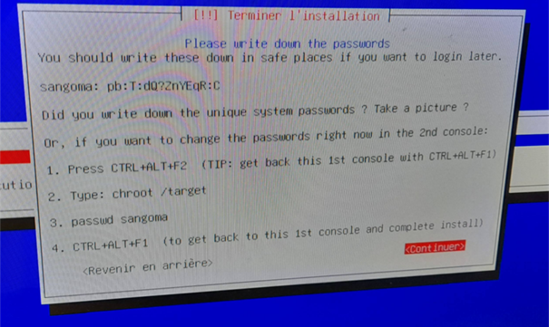
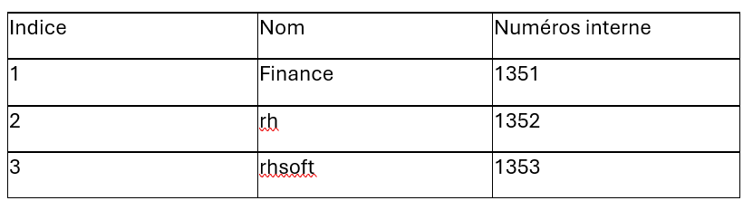
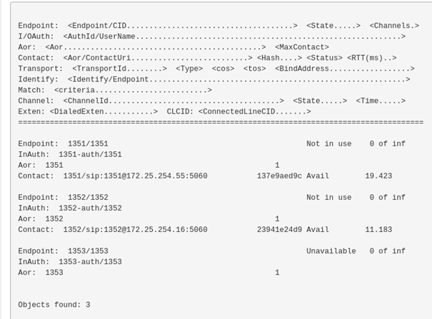
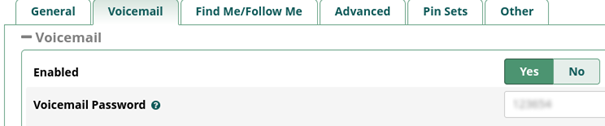
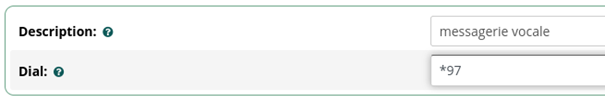
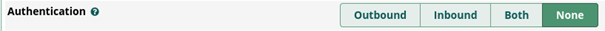
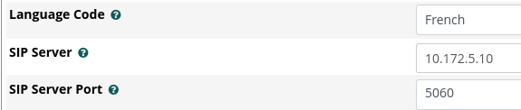
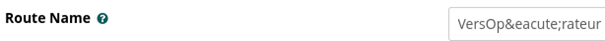
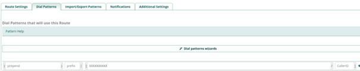
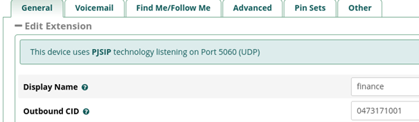

Installation du Call server
Tout d’abord, on choisit quelle Ibx utiliser pour notre configuration téléphonique. Ici, on choisit d’utiliser FreePBX car il propose une interface intuitive, il possède une compatibilité avec de nombreux téléphones SIP et plusieurs autres fonctionnalités utilisées par la suite.
Ensuite, on installe l'ISO de FreePBX qu’on place dans une machine virtuelle créée à partir de VMware.
Pour l’installation, on attribue à notre VM 40 Go de stockage, 2 Go de mémoire vive et on précise qu’on utilise Debian 12_64bits.
Après avoir démarré la VM, une page de configuration s’ouvre :
Elle nous permet de changer le mot de passe.
Login : sangoma
MDP : patate
Une fois l’installation terminée, on va sur notre navigateur et on entre l’adresse IP (192.168.247.129).
Ensuite, on arrive sur une page qui nous permet de configurer notre utilisateur Administrateur. Pour cela, on remplit plusieurs champs :
- Login : root
- PSW : patate
- mail : rh@patate.local
Puis on clique sur "skip" jusqu’au pare-feu où l’on doit cocher "yes" sur les deux pages pour pouvoir autoriser l’IP du PC. Cependant, on doit quand même ajouter une ligne de commande sur notre VM pour que notre PC ne soit pas bloqué par le Call Server. Cette commande est :
fwconsole firewall trust 192.168.247.1
Cependant, si on redémarre notre machine, il peut y avoir un bug au niveau du démarrage de la VM.
Pour résoudre ce problème, on peut utiliser cette solution :
- lsmod | grep vmmon (Vérifie si le module est déjà chargé)
- modprobe vmmon (Tente de charger le module)
- lsmod | grep vmmon (Vérifie si le chargement a réussi)
Si les modules sont chargés :
- systemctl restart VMware
Cependant, il faut taper ces commandes après chaque redémarrage. On va donc créer un petit script pour qu'il soit fait au démarrage du PC.
Le script sera créé dans le dossier : /etc/systemd/system/vmware-startup.service
Nous créons notre script en trois parties :
[Unit]
Description=Initialisation de VMware modules
After=network.target
La première partie indique quand s’effectue le lancement. Ici, la première ligne est simplement une ligne de description de notre programme. Mais la ligne After=network.target permet de signaler que le programme se lance quand le réseau est prêt.
[Service]
Type=oneshot
ExecStart=/sbin/modprobe vmmon
ExecStartPost=/bin/systemctl restart vmware
Cette partie définit les commandes à entrer. Tout d’abord, le Type=oneshot permet d’exécuter le programme qu’une seule fois par démarrage. Ensuite, on exécute les deux commandes : ExecStart=/sbin/modprobe vmmon et ExecStartPost=/bin/systemctl restart vmware, qui nous permettent de charger le module vmmon puis de redémarrer le service vmware. Les commandes ExecStart et ExecStartPost permettent d’exécuter les commandes au redémarrage du PC ou juste après.
[Install]
WantedBy=multi-user.target
Cette ligne est obligatoire et signifie que le script se lance au démarrage standard de la VM.
Configuration des utilisateurs
Tout d’abord, on doit changer l’adresse IP de notre machine par l’adresse : 172.25.254.201
Puis, pour configurer les utilisateurs, on va dans le menu "extension" qui se trouve dans "connectivité".
Ensuite, on clique sur "Add Extension", puis on choisit SIP. On renseigne ensuite un numéro de téléphone interne ; exemple : le premier téléphone a pour numéro 1351. Ensuite, on entre le nom qui s’affichera sur le téléphone lors d’un appel. Enfin, on pourrait renseigner un numéro externe pour que les clients puissent appeler depuis un téléphone personnel. Cependant, aucun numéro ne nous a été attribué.

Configuration d’appel
Après avoir configuré nos téléphones, on rencontre plusieurs problèmes qu’on doit résoudre.
- Tout d’abord, on doit autoriser au pare-feu l’adresse de chaque téléphone (le chemin de la commande fwconsole est : /usr/sbin/fwconsole) avec les commandes :
- Ensuite, il y a un second problème avec la gestion des ports. Pour résoudre ce problème, on commence par ajouter une règle pour autoriser les échanges sur le port 5060 et les ports 10000 à 20000. Pour cela, on entre les commandes :
sudo /usr/sbin/fwconsole firewall trust 172.25.254.55
sudo /usr/sbin/fwconsole firewall trust 172.25.254.16
Ensuite, on redémarre le service avec :
sudo /usr/sbin/fwconsole restart
sudo iptables -A INPUT -p udp --dport 5060 -j ACCEPT
sudo iptables -A INPUT -p udp --dport 10000:20000 -j ACCEPT
On veut sauvegarder nos règles pour qu’elles restent appliquées au démarrage :
sudo iptables-save > /etc/iptables/rules.v4
Cette commande ne fonctionne pas car on n’a pas les droits.
On modifie donc les droits avec les commandes :
sudo chmod 755 /etc/iptables
sudo chmod 644 /etc/iptables/rules.v4
Puis on enregistre dans un fichier intermédiaire que l’on copie ensuite :
sudo iptables-save > /tmp/rules.v4
sudo mv /tmp/rules.v4 /etc/iptables/rules.v4
Si jamais il y a un bug avec les utilisateurs, on va dans "Reports -> Asterisk Info -> Peers". Cette commande permet de voir si un téléphone est actif.
Configuration de la messagerie
Pour configurer notre messagerie, on va dans Connectivité -> Extension.
Puis on va dans l’onglet "Voicemail" et on met "Enable : Yes".
Ensuite, on ajoute un mot de passe (123654).

Pour écouter la messagerie, on va dans : Application -> Misc Destination.
Ensuite, on ajoute un numéro : *97 (Il est important de ne pas oublier le * lors de la composition du numéro pour écouter la messagerie !)
Enfin, on clique sur "Submit", puis "Apply Config".
Mise en place d’un trunk SIP
On commence par "Trunk". Pour cela, on va dans : Connectivity -> Trunks -> Add Trunk
On nomme notre lien Trunk (ligne Trunk Name) : Vers_operateur.
Puis à la case Outbound Caller ID, on entre notre numéro : 0473171000 (premier numéro de la plage donnée).
On va ensuite dans l’onglet PJ SIP Settings.
On précise qu’aucune authentification n’est nécessaire.
On met le code langue en français.
Puis on configure le serveur SIP en 10.172.5.10.
Enfin, on met le port du serveur SIP à 5060.
On clique sur "Submit" pour sauvegarder notre configuration.
On continue avec : Connectivity -> Inbound Routes -> Add Inbound Route
On entre le DID Number : 0473171001 (numéro donné à un des clients).
Puis on sélectionne "Set Destination : Extension" et on choisit un de nos utilisateurs.
On va ensuite dans le menu "Advanced" et on sélectionne "France".
On clique sur "Submit" pour enregistrer la configuration.
Puis : Connectivity -> Outbound Routes -> Add Outbound Route.
On commence par nommer la route (sans accent), ici "VersOperateur".
Dans "Trunk Sequence for Matched Routes", on sélectionne le Trunk créé.
On va ensuite dans l’onglet "Dial Patterns".
Dans "Match Pattern", on tape "XXXXXXXXXX" pour indiquer qu’il faut dix chiffres pour un appel vers l’extérieur.
On clique sur "Submit" pour enregistrer la configuration.
Dans le menu "Connectivité -> Extension", on change le "Outbound CID" pour l’affichage du numéro de téléphone.
